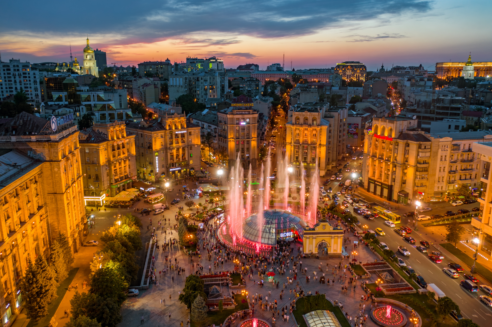
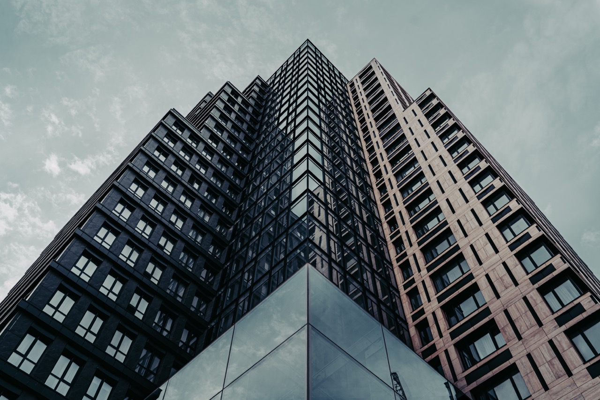

Kyiv is the capital and the largest city of Ukraine located on the Dnieper River, in the north of the central part of the country. It is Ukraine's most significant cultural, political, socio-economic, transport, scientific, and religious center. The city is the administrative center of the Kyiv region.

Archaeological excavations show that settlements on the territory of the Kyiv region existed already 15,000-25,000 years ago. According to legend, Kyiv was founded by three brothers Kyi, Shchek, Khoryv, and their sister Lybid as the center of the Polyan tribe and named in honor of the older brother in the middle of the 5th century AD.

Kyiv is a large industrial center of Ukraine with enterprises in the light and food industry, printing, pharmaceuticals, engineering, metallurgy, and aircraft building. The services sector mainly contributes to the local economy - transport and communications, small and wholesale trade, real estate, legal and financial services.

The battle of Kyiv was part of the Kyiv offensive in the 2022 Russian invasion of Ukraine for control of Kyiv, the capital city of Ukraine, and surrounding districts. The combatants were elements of the Russian Armed Forces and Ukrainian Ground Forces. The battle lasted from 25 February 2022 to 2 April 2022 and ended with the withdrawal of Russian forces.
Heart of Ukraine
History
Economics
Bravery
Kyiv - the city where everything begins!